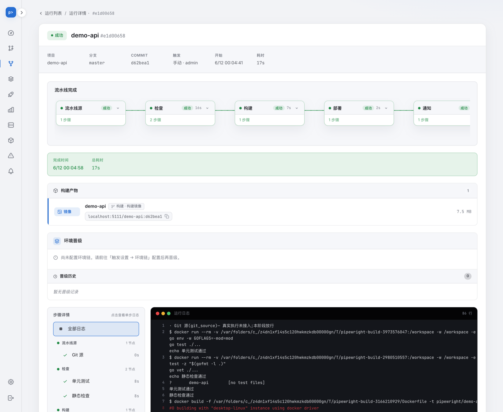
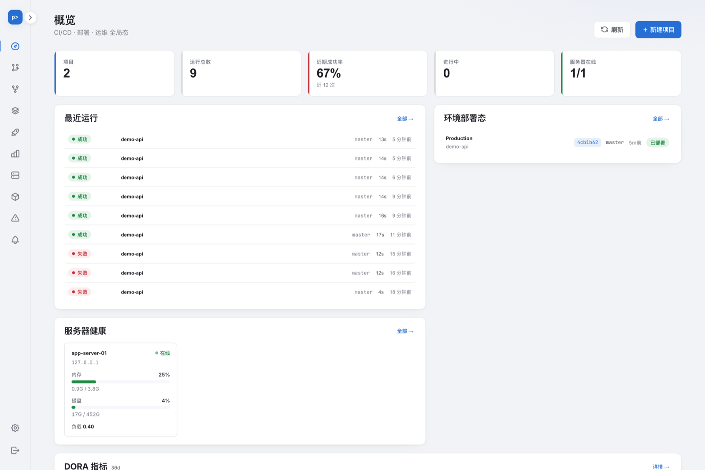

开源自托管 CI/CD
在同一个实例编排构建、测试和部署，追踪节点日志、制品与发布结果。


从项目的第一条流水线开始，按需配置发布目标、凭据和团队权限。
在画布配置任务与依赖，或将 YAML 提交到仓库。失败时定位具体节点并查看日志。
用 SSH 或 Kubernetes 发布，核对实际部署版本，再在护航报告中追踪结果与相关变更。
在自己的实例管理流水线和凭据。需要协作时，可以开启团队模式并按角色授权。
从启动实例到在节点日志中看到第一条输出。